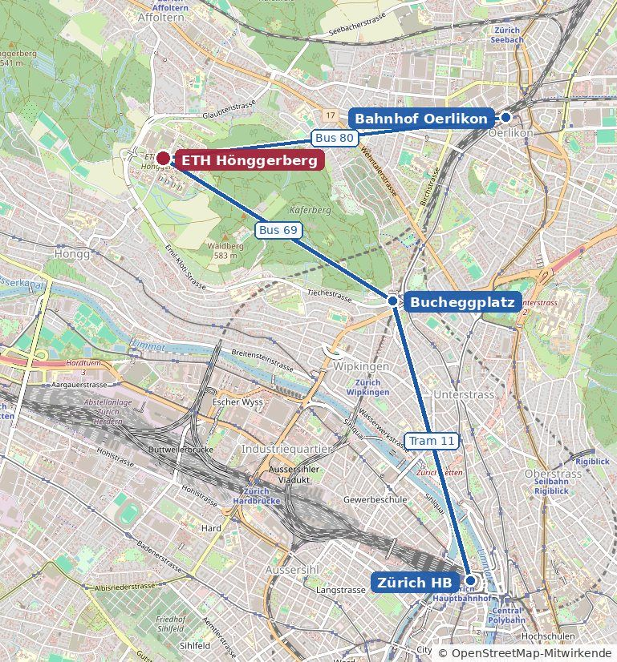
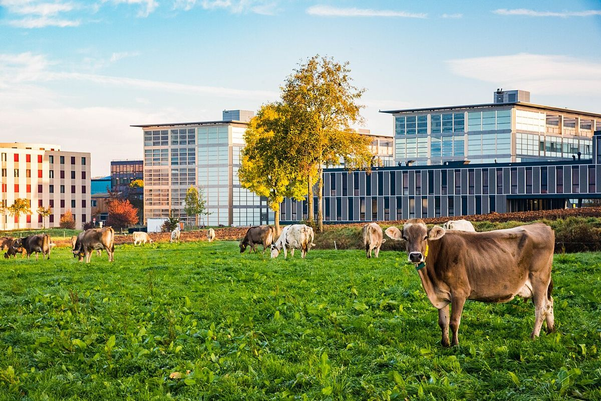

Der Vortrag beginnt pünktlich um 12:00. Wer später kommt, wartet bitte vor der Tür, bis der Vortrag vorbei ist (ca. 12:20). Benjamin zuliebe. Plant für die Anreise etwas Reserve ein.
Ablauf
Der Vortrag ist öffentlich, die Prüfung danach findet hinter verschlossenen Türen statt.
- 11:45Eintreffen im Hörsaal HCI G 7Plätze nehmen, Handy lautlos
- 12:00Öffentlicher VortragBenjamin stellt seine Doktorarbeit vor, ca. 20 Minuten
- 12:20Apéro im Foyer vor dem HörsaalBenjamin ist währenddessen in der Prüfung bei den Experten
- ~14:30Bekanntgabe des Ergebnissesdurch die Experten, anschliessend Dank und Doktorhut
- ~15:30Gemütlicher Ausklang
Apéro
Nach dem Vortrag laden wir alle zum Apéro ein. Während Benjamin geprüft wird, stossen wir schon mal an und warten gemeinsam auf das Ergebnis.
- Kalte Platten mit Fleisch, Käse und Gemüse
- Frisches Brot und vegetarische Häppchen
- Weisswein, Bier, Mineral und Softdrinks
Es ist Mittagszeit, ihr müsst also nicht vorher essen gehen. Bitte bleibt im Foyer etwas leise, im Gebäude finden Vorlesungen statt.
Anreise
Wir empfehlen den ÖV. Die Haltestelle „ETH Hönggerberg“ liegt 2 Minuten zu Fuss vom Hörsaal entfernt.
Ab Zürich HB (ca. 25 Min.)
- Tram 11ab „Bahnhofquai/HB“ bis „Bucheggplatz“
- Bus 69ab „Bucheggplatz“ bis „ETH Hönggerberg“
Ab Bahnhof Oerlikon
- Bus 80ab „Bahnhof Oerlikon Nord“ Richtung Triemlispital bis „ETH Hönggerberg“
Aus Luzern und der übrigen Schweiz
- Zugbis Zürich HB, dann weiter wie oben. Von Luzern dauert es mit allem Umsteigen etwa 1¼ Stunden.

Parkhaus P2
Am nächsten beim Hörsaal liegt das Parkhaus P2 an der Albert-Einstein-Strasse, beim Kreisel. Von dort sind es rund 5 Minuten zu Fuss über den Stefano-Franscini-Platz bis zum HCI.
- NaviZiel „Parkhaus P2, Albert-Einstein-Strasse, 8093 Zürich“ oder den Link unten verwenden
Parkplätze sind am Hönggerberg knapp. Wenn möglich, bildet Fahrgemeinschaften.

Vor Ort
Der Campus Hönggerberg liegt am Stadtrand im Grünen, mit Kühen gleich nebenan.


Im HCI geht ihr auf Stockwerk G zum Hörsaal G 7. Zieht euch warm an, Anfang Dezember ist es auf dem Hönggerberg meist kalt.